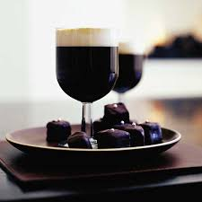

Here is my Irish Coffee Recipe
Home

Recipe Origin:
The Irish Coffee cocktail originated in the 1940s at Foynes Airport in Ireland. Chef Joe Sheridan created it to warm up cold, tired passengers arriving from transatlantic flights. He added whiskey to hot coffee, topped with cream, and served it as a comforting drink. A visiting American journalist, Stanton Delaplane, discovered the drink and later introduced it to the United States, particularly at the Buena Vista Cafe in San Francisco, where it became widely popular. Its signature combination of coffee, Irish whiskey, and cream has since become an iconic global cocktail.
Ingredients:
- 1 cup of hot brewed coffee (strong)
- 1 ½ oz (45 ml) of Irish whiskey
- 1-2 teaspoons of brown sugar (or to taste)
- Heavy cream (whipped, but still pourable)
Instructions:
- Brew the Coffee: Prepare a cup of strong, hot coffee.
- Add Sugar: Stir in the brown sugar (or white sugar) into the hot coffee until it dissolves completely.
- Pour in Whiskey: Add the Irish whiskey to the coffee and stir to combine.
- Whip the Cream: Lightly whip the heavy cream until it’s just thickened, but still pourable (you want it to float, not mix into the coffee).
- Top with Cream: Gently float the whipped cream on top of the coffee by pouring it over the back of a spoon, allowing it to rest on the surface.
- Serve: Enjoy your Irish Coffee while it's still hot!